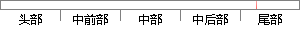

点击添加问题，填写好问题基本信息，系统会自动返回到问题列表页面，并将问题保存到列表中。
片段位置图

相似结果|
相似片段 1： 4-3 系统功能测试结果1.6新增问卷点击“新增问卷”按钮，能够弹出“新增问卷”页面，填写相关信息后点击“提交”，返回“问卷列表”页面，并显示新增的问卷已经添加与预期一致1.7 问卷问题管理选中某
|
※ 片段修改建议 ※
近似词参考：- 问题：题目
- 问题：题目
- 系统：体系
- 自动：主动
- 问题：题目
- 问题：题目
- 保存：保留 留存 生存
系统自动生成语句：点击添加题目，填写好题目基本信息，体系会主动返回到题目列表页面，并将题目保留到列表中。
注：本片段修改建议为系统自动生成，仅供参考。